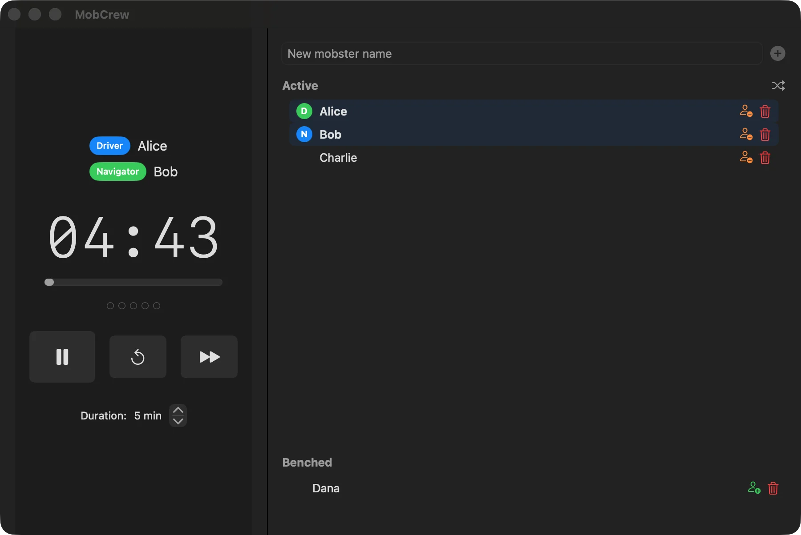
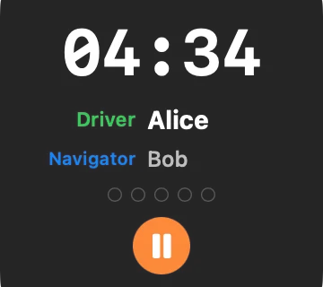
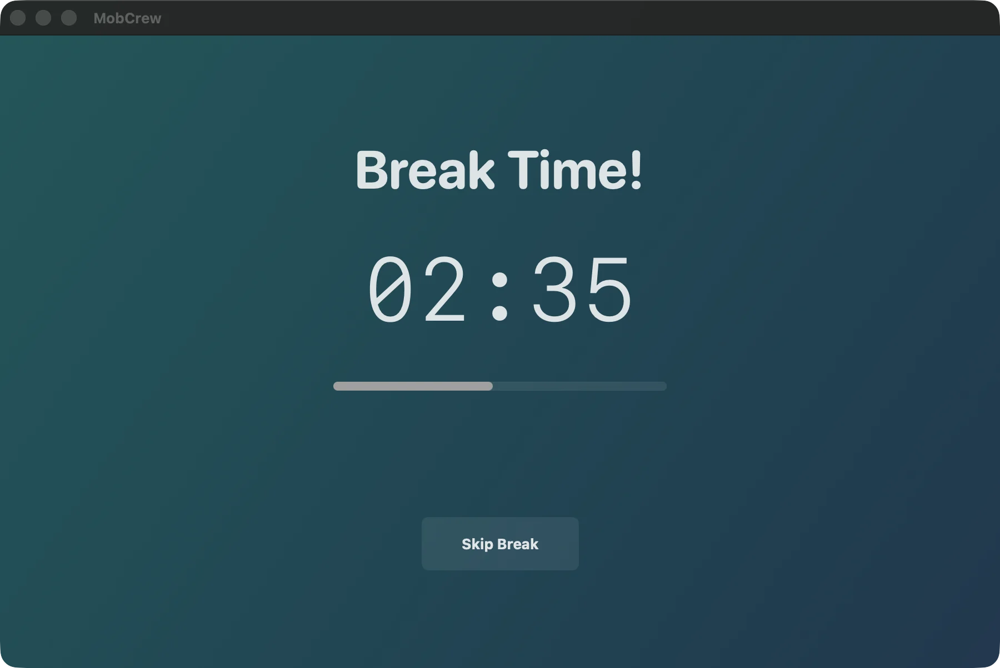
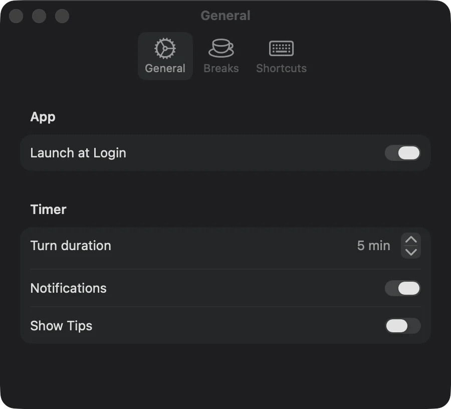

Configurable turn timer
Choose the duration, pause or reset as needed, and optionally receive a notification when the turn completes.
Native macOS app for pair, mob, and ensemble programming
Track the roster, show the current driver and navigator, rotate roles automatically, and keep the countdown visible without interrupting the session.
Release trust note: the current v0.2.0 artifact is arm64-only, its app is ad-hoc signed rather than Developer ID signed, and its outer DMG is unsigned. Exact notarization and clean-Mac Gatekeeper behavior remain unverified.

A shared rhythm without meeting overhead
Mob programming puts the whole team on one problem. MobCrew handles the visible rotation so the team can stay focused on the work.
Add, bench, reorder, or shuffle participants. MobCrew assigns the current Driver and Navigator from the active roster.
Run a configurable turn timer in the main window or the always-on-top floating panel while everyone works.
Advance roles automatically or skip on demand, with a configurable in-window Take Break or Skip Break choice after a chosen number of turns. Running, paused, and pending-break sessions restore after relaunch, reconciling elapsed time for active countdowns.
Built for the flow of a real session
Choose the duration, pause or reset as needed, and optionally receive a notification when the turn completes.
Keep active and benched participants together, with drag-and-drop ordering and clear Driver/Navigator roles.
Advance the roster when time expires or skip manually, keeping the next Driver and Navigator predictable.
A compact always-on-top panel carries the countdown and roles into the editor, terminal, or shared screen.
After a configurable number of turns, the main window switches to a visible break screen where the team can take or skip the break.
Use menu-bar controls or press ⌘⇧L to toggle the floating timer from another app without Accessibility access.
Current real-app captures
Select any screenshot to open its full-resolution file. These captures show only the visible state described below.

The compact roles and countdown panel by itself. This capture does not demonstrate its position over another app.

Once taken, the pausable break countdown replaces the main window content; the visible title bar confirms it is not a full-screen overlay.

Launch at login, turn duration, notifications, and optional programming tips, with current macOS status and recovery links for login and notification access. Shortcuts are listed separately.
Install and first run
Download the DMG from the latest GitHub release.
Open it, copy MobCrew to Applications, eject the DMG, then open MobCrew from Applications.
If macOS blocks this known download because it cannot verify the developer, review the message in System Settings → Privacy & Security and choose Open Anyway only for the release you intended to download.
Permissions, privacy, and support
No. The fixed global shortcut ⌘⇧L uses macOS Carbon hotkey registration to toggle the floating timer from another app without requesting Accessibility access.
No. MobCrew asks when you first start the timer and uses permission only for optional turn and break alerts. The timer continues if access is denied, and alerts can be disabled in General settings, which also reports macOS authorization status and links to System Settings when access is denied.
The current app code has no account, telemetry, or network service. Roster, settings, and current session state stay in local macOS user defaults, and active names are also written to MobCrew's local Application Support folder.
MobCrew has no in-app updater. Replace the copy in Applications with a newer release. For help or bug reports, use GitHub Issues.
Xcode is only for development; installing a release requires macOS
14 or later. The current v0.2.0 release contains an Apple-silicon
(arm64) executable only; it does not include an Intel
(x86_64) executable. Future artifacts are qualified
independently.
{kind=link}
{kind=link}
{kind=link}